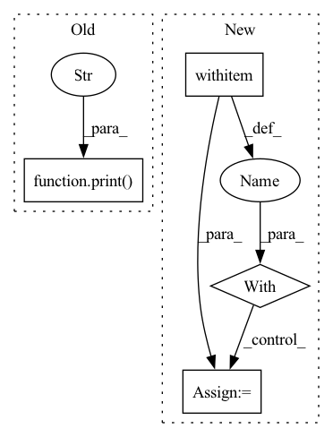

Pattern ID :26336
Before Change
tqdm.pandas()
// astred and cross
print("ADDING CROSS AND ASTRED" )
partial_func = partial(process_astred_cross, method)
// dirty looking way of fast processing
// as taken from https://stackoverflow.com/a/60056244/1150683After Change
if args.j > 1:
splits = np.array_split(df, args.splits)
partial_func = partial(mapable_df_process, gpu_partial_process)
with Pool(processes=cargs.j) as pool:
row_list = pd.concat(tqdm(pool.imap(partial_func, splits),
total=args.splits,
unit="split"))
else:In pattern: SUPERPATTERN
Frequency: 4
Non-data size: 4
Instances Fragment ID: 79080679
Project Name: bramvanroy/astred
Commit Name: 8893b5c8514d739d55727a28ec1c1cb2ddcf033a
Time: 2020-03-02
Author: Bram.Vanroy@UGent.be
File Name: add_info_to_df.py
M Class Name: AnonimousClass
N Class Name: AnonimousClass
M Method Name: main(1)
N Method Name: main(3)
M Parent Class:
N Parent Class:
M File Name: add_info_to_df.py
N File Name: add_info_to_df.py
M Start Line: 51
M End Line: 75
N Start Line: 71
N End Line: 95
Before Change
print("[+] Start to train tokenizer")
tokenizer.train(glob(args.data_pattern), trainer)
print(f"[+] Save tokenizer to {args.tokenizer_path}" )
pretrained_tokenizer = PreTrainedTokenizerFast(
tokenizer_object=tokenizer,
pad_token="[PAD]",
unk_token="[UNK]",After Change
def main(args: argparse.Namespace):
with tempfile.TemporaryDirectory() as tmpdir:
model_prefix = os.path.join(tmpdir, "tokenizer")
spm.SentencePieceTrainer.train(
input=",".join(glob(args.data_pattern)),
model_prefix=model_prefix,
model_type="unigram",
vocab_size=args.vocab_size,
pad_id=0,
unk_id=1,
bos_id=2,
eos_id=3,
pad_piece=PAD,
unk_piece=UNK,
bos_piece=BOS,
eos_piece=EOS,
user_defined_symbols=[MASK, SEP, *special_words],
)
with httpimport.remote_repo(["sentencepiece_model_pb2"], SENTENCEPIECE_URI):
import sentencepiece_model_pb2
tokenizer = SentencePieceUnigramTokenizer.from_spm(model_prefix + ".model")
pretrained_tokenizer = PreTrainedTokenizerFast(
tokenizer_object=tokenizer, Fragment ID: 79080686
Project Name: cosmoquester/2021-dialogue-summary-competition
Commit Name: a838bbb19625cb84a10539a0a136f7893f6634bc
Time: 2021-12-26
Author: cosmoquester@gmail.com
File Name: run/train_tokenizer.py
M Class Name: AnonimousClass
N Class Name: AnonimousClass
M Method Name: main(1)
N Method Name: main(1)
M Parent Class:
N Parent Class:
M File Name: run/train_tokenizer.py
N File Name: run/train_tokenizer.py
M Start Line: 42
M End Line: 55
N Start Line: 52
N End Line: 88
Before Change
labels.append(0)
scores.append(cosine_similarity(anchor_embedding, neg_embedding))
triplets_evaluated += 1
print("triplets evaluated:" , triplets_evaluated, "/", num_eval_triplets)
return (labels, scores)
def compute_eer(labels, scores):After Change
scores = []
spk_to_utts = feature_extraction.get_spk_to_utts(myconfig.TEST_DATA_DIR)
fetcher = TripletScoreFetcher(spk_to_utts, encoder, num_eval_triplets)
with multiprocessing.Pool(myconfig.NUM_PROCESSES) as pool:
while num_eval_triplets > len(labels) // 2:
label_score_pairs = pool.map(fetcher, range(
num_eval_triplets - len(labels) // 2))
for triplet_labels, triplet_scores in label_score_pairs:
labels += triplet_labels Fragment ID: 79080684
Project Name: wq2012/speakerrecognitionfromscratch
Commit Name: a93d8ddbd387c75b3eb58399b724b95f61e51a24
Time: 2022-05-10
Author: quanw@google.com
File Name: evaluation.py
M Class Name: AnonimousClass
N Class Name: AnonimousClass
M Method Name: compute_scores(2)
N Method Name: compute_scores(2)
M Parent Class:
N Parent Class:
M File Name: evaluation.py
N File Name: evaluation.py
M Start Line: 38
M End Line: 58
N Start Line: 67
N End Line: 78
Before Change
if task is None:
print("[1] Map PTB-XL to MIMIC-III")
mapped_ptbxl = map_to_mimiciii(args.ptbxl_dir, args.mimic_dir)
print("[2] Encode mapped PTB-XL database" )
encoded_ptbxl = encode_ptbxl(args.ptbxl_dir, ptbxl_database=mapped_ptbxl)
print("[3] Instantiate templates based on the encoded PTB-XL")
sampled_data, grounding_data = instantiate_template(
ptbxl_dir=args.ptbxl_dir,After Change
sampled_data = pickle.load(f)
with open(args.derived_grounding_data, "rb") as f:
derived_grounding_data = pickle.load(f)
with open(args.independent_grounding_data, "rb") as f:
independent_grounding_data = pickle.load(f)
manifest(sampled_data, derived_grounding_data, independent_grounding_data, args.dest)
if __name__ == "__main__": Fragment ID: 79080681
Project Name: jwoo5/fairseq-signals
Commit Name: 1865c0c83ba4ae18aa46838313c7350b8b440f60
Time: 2023-02-25
Author: ojw0123@korea.ac.kr
File Name: fairseq_signals/data/ecg_text/preprocess/ptbxl_qa_pipeline.py
M Class Name: AnonimousClass
N Class Name: AnonimousClass
M Method Name: main(1)
N Method Name: main(1)
M Parent Class:
N Parent Class:
M File Name: fairseq_signals/data/ecg_text/preprocess/ptbxl_qa_pipeline.py
N File Name: fairseq_signals/data/ecg_text/preprocess/ptbxl_qa_pipeline.py
M Start Line: 88
M End Line: 122
N Start Line: 108
N End Line: 161